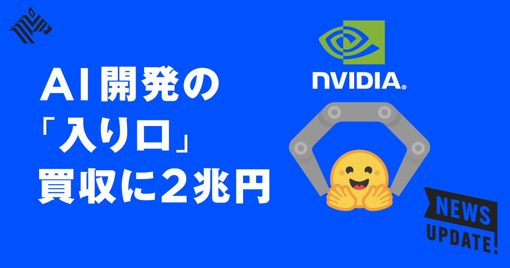
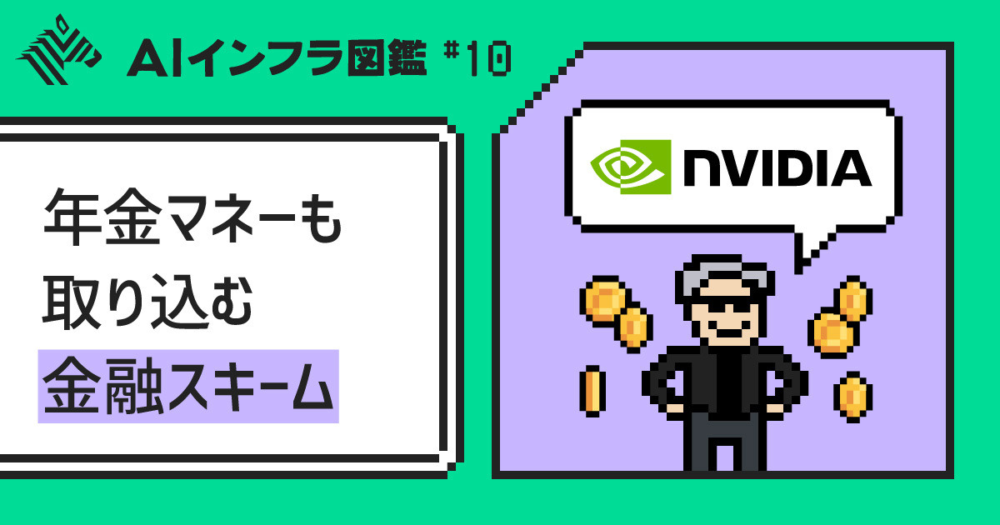
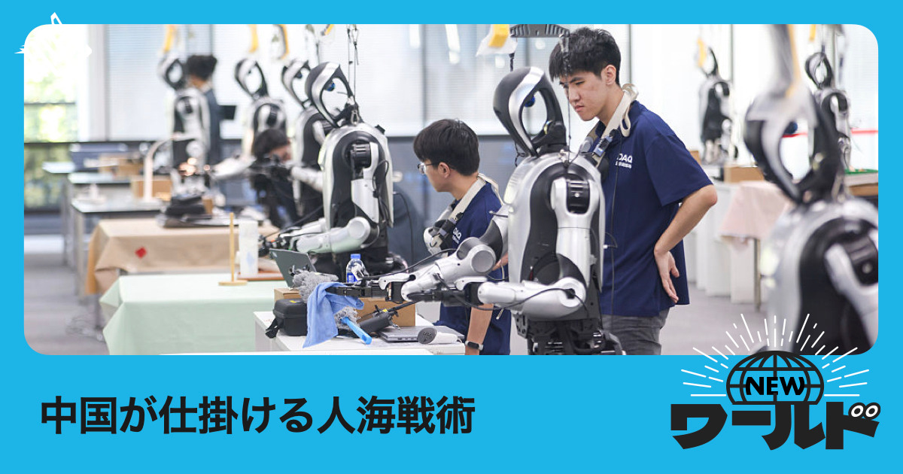
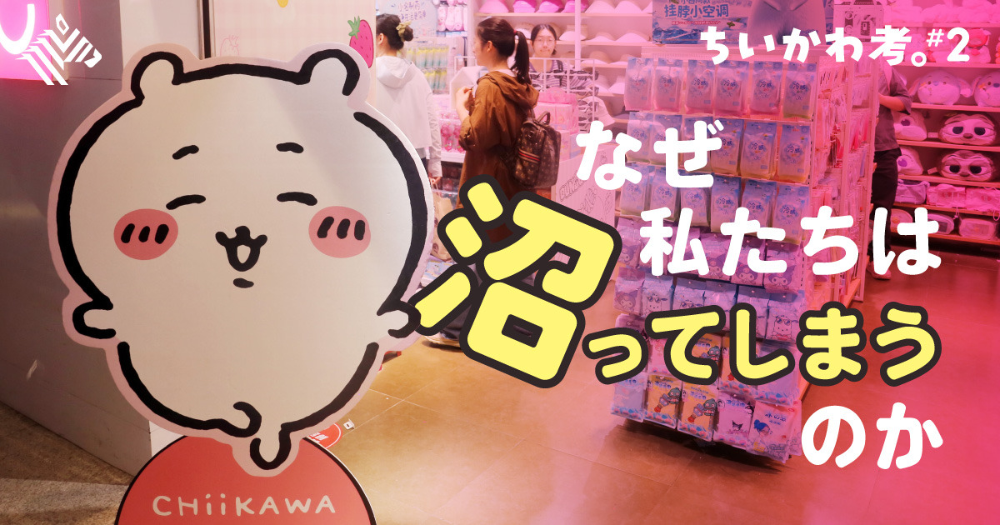

01
【3分解説】エヌビディアの「AI版GitHub」買収が意味すること
公開日時：2026年8月28日 05:30 JST

あなたに関係ありそうな理由
GPUの性能だけでなく、モデルと開発者が集まる場を誰が持つかが、AI導入時の選択肢やコストに影響するためです。
概要
エヌビディアが、AI開発の共有基盤として知られるHugging Faceの買収を検討していると報じられたことを手がかりに、同社が半導体の販売先で何を取りに行くのかを解く記事です。Hugging Faceは「AI版GitHub」とも呼ばれ、約1300万人の利用者と300万超の公開モデルを抱える場です。開発者はモデル、データセット、実装をここで探し、試し、共有するため、特定のクラウドやチップに閉じない中立的な接点として機能してきました。記事によれば、買収額は129億ドル、約2兆円規模と伝えられ、実現すればエヌビディア最大の案件になります。同社の四半期売上高は960億ドル、純利益は600億ドルに達し、AI計算資源の需要を収益へ変えている最中です。それでも買収対象がチップ企業ではなく開発者コミュニティなのは、AIの競争が計算性能だけでは決まらなくなっているからです。本文は、データ準備、事前学習、追加学習、AIエージェントの推論という「AI Factory」の四層を示し、エヌビディアがその全体に関与しようとしていると説明します。モデルが企業内で開発され、クラウド各社や大口顧客が自前チップを使うほど、GPUを売る会社には利用者がどこで開発を始め、どの道具を選ぶかが重要になります。Hugging Faceを囲い込めば、開発の入口に近づけますが、同時に中立性を失えば利用者が離れる危険もあります。表示コメントでも、狙いは単なる開発フローの取得ではなく、ハードウェアが代替可能になっても主導権を保つための防衛線だという見方が出ました。一方で、オープンなモデルと幅広い開発者が集まるからこそ価値があるため、買収後も特定のチップへ強く誘導すれば基盤の魅力を損ねかねません。記事は、年商1億5000万ドル規模の企業に高い評価額が付く背景も、ソフトウェア売上だけでなく、モデル、データ、利用者の集積にあると示します。AIを使う側は、性能比較に加え、モデルをどこから入手し、誰が更新し、別の基盤へ移せるのかを見る必要があります。開発者コミュニティの中立性は、利用企業にとっても将来の乗り換えや交渉力を左右する条件です。
仕事や会話で使える一言
「AIの主導権は、チップの性能だけでなく、開発者が集まる中立の入口を誰が守れるかでも決まります。」
NewsPicks原文を読む
02
【80兆円】エヌビディアの「新しい循環取引」がケタ違いだ
公開日時：2026年8月28日 05:30 JST

あなたに関係ありそうな理由
AI投資の規模を、売上成長だけでなく資金の出し手、設備の残存価値、需要の実態から読む視点を得られるためです。
概要
エヌビディアがAIインフラ投資を支えるため、アポロ、ブラックロック、ブラックストーン、ブルックフィールド、ゴールドマン・サックス、KKRなどと5000億ドル、約80兆円規模の資金供給について覚書を結んだという記事です。対象は、AI向けGPUを大量に借り受けて企業へ提供する「ネオクラウド」や、OpenAI、AnthropicのようなAI企業が使う計算資源です。通常なら借り手は高価なGPUを買う資金を自ら調達する必要がありますが、外部の大手運用会社が長期資金を出せば、設備投資の資金調達コストを下げられます。エヌビディア側にとってはGPUの販売先を増やし、資金提供者側にとってはAIインフラの収益機会を得る構図です。記事が「新しい循環取引」と呼ぶのは、GPUメーカー、購入者、資金の出し手が近い関係で需要を作るように見えるためです。従来から懸念されるベンダーファイナンスでは、売り手が顧客へ資金を貸し、売上を自ら支える形になりがちです。今回はエヌビディアが独立した長期資本だと強調する一方、一部案件ではGPUの残存価値を最大25％まで支える仕組みを認めていると説明されます。機器が将来いくらで売れるかという不確実性を、メーカーも一部引き受けるなら、資金提供者のリスクは軽くなります。本文は、ブロードコムが発表した350億ドル規模の資金供給と比べても、今回の額が際立つと置きます。資金の出し手と実際の利用者が分かれるため、表面上のGPU需要が最終的なサービス需要とどれほど結びつくかは、以前より見えにくくなります。ハイパースケーラーが自社チップを開発する流れもあり、エヌビディアは巨大クラウド以外の顧客層を広げたい事情があります。表示コメントでは、重要なのは華やかな調達額ではなく、過剰設備にならないか、利用料で投資を回収できるか、残存価値を誰が負うかだという指摘がありました。AI投資を読む際は、契約総額をそのまま需要の確定と見なさず、実際の稼働率、借り手の支払い能力、保証条件を分けて確認したいところです。大きな資本が入るほど、供給の増え方と利用の増え方がずれていないかを丁寧に追う必要があります。
仕事や会話で使える一言
「80兆円という数字より、誰が設備の値下がりリスクを持ち、誰の利用料で回収するのかを見るべきです。」
NewsPicks原文を読む
03
【衝撃アプローチ】ヒューマノイドのデータ収集が面白い
公開日時：2026年8月28日 05:30 JST

あなたに関係ありそうな理由
現場の熟練や失敗を、映像量だけでなく文脈を含む学習データとして残せるかを考える材料になるためです。
概要
中国のヒューマノイド開発で、機体そのものよりも「脳」を育てるための実世界データ集めが大きな課題になっていることを扱う記事です。中国企業は機械の製造で先行している一方、ロボットが家庭、店舗、工場で多様な作業をこなすには、手足を動かした膨大な実例が要ります。記事によれば、中国には53の訓練施設があり、さらに計画も続いています。武漢の施設では、カフェ、薬局、店舗、工場を模した空間に最大100台のロボットを置き、人が遠隔操作したり、実演を見せたりしてデータを取っています。人がカメラを身につけて作業する視点映像も、ロボットが手をどう動かし、周囲をどう見るかを学ぶ素材になります。集めるのは成功した操作だけではなく、物を取り損ねた、止まった、次に何を確認したといった試行の過程です。本文では、作業一時間当たりのデータ収集費が500〜700元、約1万5000円とされ、八時間働いても実際に使える記録は三時間ほどにとどまると紹介されます。幅広い仕事ができる水準には1億時間程度が必要だという見積もりもあり、データの量、質、ラベル付けが事業の土台になります。地方政府が費用の8割を負担し、ロボットを買ってデータを民間へ売り戻す例もあるため、単独企業の研究開発というより、インフラ整備に近い動きです。2026年上半期に中国で出荷されたヒューマノイドの約7割は、こうした施設にとどまっている可能性があると記事は述べます。京東は10万人の従業員と50万人の外部参加者へ身体動作の記録を促しており、米国企業は低賃金地域からデータを集める方法も使うとされます。ただし、商業的に成熟したロボットがすぐ普及するという話ではありません。表示コメントでは、日本の工場や店舗にある暗黙知を、単に動画として保存するだけでなく、状況、目的、失敗理由を含めて残す必要があるという論点が出ました。大量の動画があっても、どの状況で何をすべきかを学べなければ価値は限られます。現場でAIやロボットを考える際は、機器の導入台数より、誰がどの作業を示し、例外や安全上の判断をどう記録するかを先に設計したいところです。集めた記録の質を確かめる工程も欠かせません。
仕事や会話で使える一言
「ロボットの学習では、成功映像の量より、例外や失敗の文脈まで残せるかが効いてきます。」
NewsPicks原文を読む
04
【分析】ちいかわ作者「ナガノ」はいかに驚異的か
公開日時：2026年8月28日 05:30 JST

あなたに関係ありそうな理由
キャラクターIPを、広告量ではなく日々の更新、作品の細部、ファンとの継続的な接点で育てる実例になるためです。
概要
ちいかわ作者のナガノ氏を、かわいいキャラクターを生んだ一発の才能としてではなく、SNS発の作品を長期の文化に育てた作り手として分析する記事です。記事は『映画ちいかわ 人魚の島のひみつ』が興行収入100億円を超えたことを入口にしますが、映画の規模だけで成功を説明しません。ちいかわは漫画誌やテレビアニメを起点に広がった作品ではなく、Xで更新される小さな物語から人々の生活へ入りました。初期の三年間には、Xを更新しなかった日が約200日しかなかったと紹介されます。短い絵と言葉をほぼ毎日のように出し、読者が作品世界へ戻るきっかけを保ち続けたことが、後のグッズ、イベント、映像の受け皿になりました。作品の魅力として記事が見るのは、かわいさだけではありません。登場人物が働き、失敗し、不安になり、ときに理不尽な世界へ向き合う姿が、日常の小さな不安を抱える読者に届きます。単純な善悪や励ましで片づけず、表情や間、話の途切れに感情を残すことが、子ども向けの見た目を越えて大人にも読まれる理由になります。作者のナガノ氏は、キャラクターを商品にするために設定を先に固めたのではなく、更新を積み重ねる中で読者が自分の意味を見出せる余白を保ってきました。記事に示される2026年のデータでは、ファンは女性が約8割、30歳以上が約7割で、40〜60代が過半を占めます。国内だけの人気でもなく、海外向けモバイルゲームは500万ダウンロード、約3割が海外からとされます。幅広い層に届くのは、誰にでも同じ作品を届けたからというより、SNSで接触しやすい軽さと、読み続けるほど見える感情の層を両立させたためです。表示コメントでは、ただかわいいから消費されているのではなく、令和の生活感や継続する創作の力があるという評価がありました。キャラクターIPを考える際は、映画の興収やグッズ売上という結果だけでなく、次の更新を待たせる頻度、細かな表情や言葉で関係を保つ仕組み、ファンが語り直せる余白を見る必要があります。一度の大型露出を増やすより、日常の中で思い出される小さな接点を絶やさないことが、長く強い作品を支えます。その継続が信頼を生みます。
仕事や会話で使える一言
「強いIPは大きな露出だけでなく、次の更新を待ちたくなる小さな接点の蓄積で育ちます。」
NewsPicks原文を読む
05
【世界のニュース7選】ネパール洪水469人死亡 二次災害を警告
公開日時：2026年8月28日 17:00 JST
あなたに関係ありそうな理由
災害、AI規制、半導体、食料、地政学を、個別の見出しではなく国際ニュースの変化として短時間で把握できるためです。
概要
ネパールの洪水被害を起点に、国際情勢、AI企業を巡る規制、半導体市場、食料価格までを七つの項目で追う世界ニュースです。最初に扱うのは、チベット国境近くで氷河が崩壊した後に起きた洪水です。記事によれば、ネパールで少なくとも469人が死亡し、数百人が行方不明になりました。直接の洪水被害だけでなく、土砂崩れや交通の寸断などの二次災害への警告が重要な論点です。自然災害を読むときは、発生直後の死者数だけでなく、救助、道路、衛生、今後の降雨で被害がどう広がるかを見る必要があります。二つ目は、米カリフォルニア州の裁判所が、米国防総省によるAnthropicのブラックリスト措置を無効とした件です。AI企業と政府機関の関係は、技術の性能だけでなく、誰がどの条件で提供を拒めるのかという契約や司法の問題にもなっています。三つ目では、トランプ大統領がオンタリオ湖を「アメリカ湖」と呼ぶ大統領令に署名したことと、カナダとの関係への影響を取り上げます。象徴的な名称の変更でも、隣国との外交や国内の受け止め方に影響し得ます。経済面では、エヌビディア株が8.7％上昇し、時価総額が4420億ドル増えたこと、次期会計年度の売上高が7割増えるとの見通しが紹介されます。半導体の期待が株価を動かす一方、それだけに市場が集中するリスクも別に考える必要があります。小麦はロシアとウクライナを巡る黒海地域の状況やエルニーニョの影響を受け、1ブッシェル7.67ドルまで上昇しました。食料価格は戦争と気象の双方で動くため、生活コストや輸入国の政策にもつながります。さらに、米CIA長官がウクライナを巡ってロシア側と協議したこと、UEFAがFIFAとThrive Capitalをめぐるワールドカップ事業の売却に関して提訴を検討していること、米国の2025年の純移民がほぼゼロになった推計も置かれます。一つひとつは別の領域ですが、制度、資本、気候、外交が同時に変わる国際環境を示します。表示コメントでは、短時間で海外ニュースを確認するための編集意図と、洪水への監視の必要性が語られました。見出しを追うだけで終えず、関心のある項目は原文で発生時点、推計の前提、今後の決定を確かめることが大切です。
仕事や会話で使える一言
「国際ニュースは、災害・規制・資本・気候が別々に動いていても、生活や投資の前提を同時に変えます。」
NewsPicks原文を読む